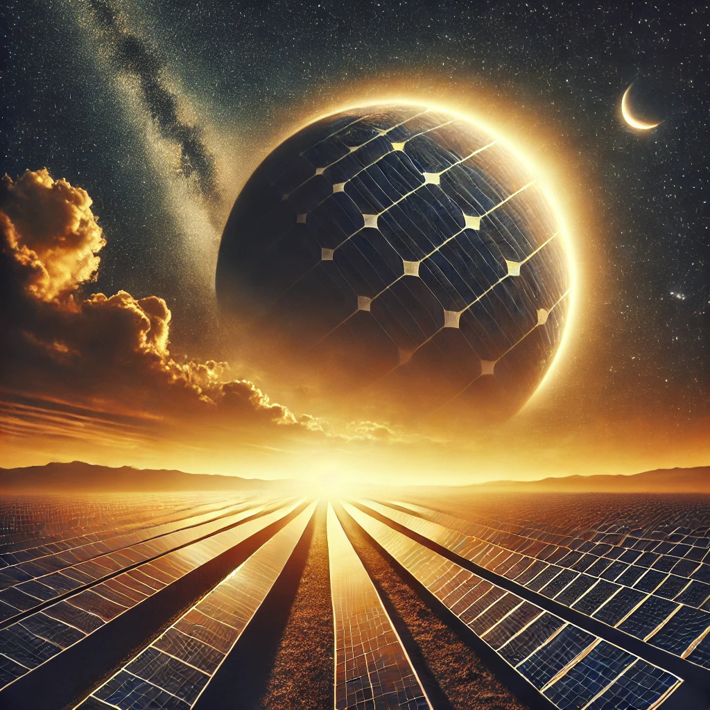

La energía solar es la energía que se obtiene del sol, en forma de luz, calor y rayos ultravioleta. Es una fuente de energía renovable, inagotable y abundante en la mayoría del mundo. Cómo se obtiene Se puede obtener mediante paneles solares o colectores. Se puede aprovechar mediante espejos y paneles solares. Se puede utilizar para generar electricidad (sistema fotovoltaico) o para obtener energía térmica (sistema fototérmico). Ventajas Es limpia y respetuosa con el medio ambiente. Contribuye a reducir la huella de carbono y mitigar el cambio climático. Favorece el autoabastecimiento energético local. Se puede almacenar. Desventajas El coste inicial de su instalación es elevado. La energía solar no es constante, ya que fluctúa a lo largo del día. Su efectividad es menor durante los meses invernales. El rendimiento de los paneles solares puede disminuir en determinadas condiciones atmosféricas. Usos Generación de electricidad. Refrigeración. Cocción de alimentos. Producción de hidrógeno. Esterilización, pasteurización y eliminación de microorganismos.
